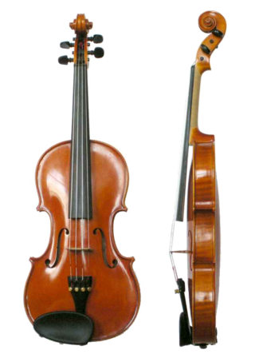
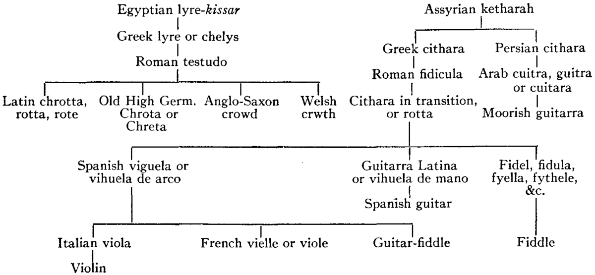
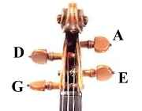
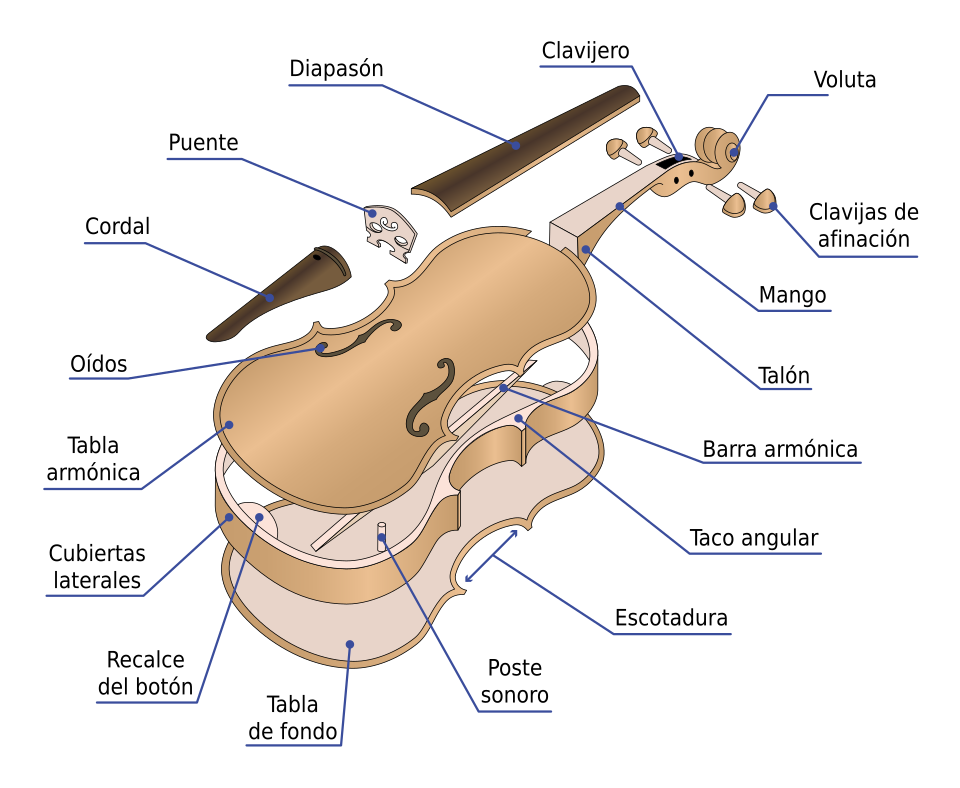
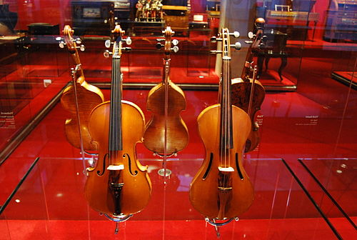

¿Qué es el violín
El violín (del italiano violino, diminutivo de viola) es un
instrumento de cuerda. Quien lo toca recibe el nombre de violinista

De la familia de las cuerdas frotadas, es el más pequeño y agudo entre
los de su clase, que se compone de una caja de resonancia en forma de
8, un mástil sin trastes y cuatro cuerdas que se hacen sonar con un
arco.
También puede haber violines electrónicos, semi electrónico, acústico,
de 5 cuerdas, silent, como también de metal.
En los violines antiguos, las cuerdas eran de tripa. Hoy pueden ser
también de metal o de tripa entorchada con aluminio, plata o acero; la
cuerda en mi, la más aguda ―llamada cantino― es directamente un hilo
de acero, y, ocasionalmente, de oro. En la actualidad se están
fabricando cuerdas de materiales sintéticos que tienden a reunir la
sonoridad lograda por la flexibilidad de la tripa y la resistencia de
los metales.Además del efecto logrado por el arco sobre las cuerdas,
se pueden conseguir otros: pizzicato (pellizcando las cuerdas como en
el arpa o la guitarra, pero con otra posición), trémolo (moviendo el
arco arriba y abajo muy rápido), vibrato (oscilando ligeramente los
dedos sobre las cuerdas), glissando (deslizando los dedos de una
posición a otra), col legno (tocando con la parte de madera del arco),
sul ponticello (tocando cerca del puente), sul tasto (tocando sobre el
diapasón), etcétera.
Afinación
Las cuerdas se afinan por intervalos de quintas:
El número está indicado de acuerdo con el índice acústico
internacional, según el cual el do central es un do4. Este índice se
utiliza en todo el mundo occidental excepto México (la 440→la5) y los
países regidos por el índice acústico franco-belga (la 440→la3).
La cuerda de sonoridad más grave es la de sol3, y luego le siguen, en
orden creciente, el re4, la4 y mi5..En el violín la primera cuerda en
ser afinada es la del la; esta se afina comúnmente a una frecuencia de
440 Hz, utilizando como referencia un diapasón clásico de metal
ahorquillado o, desde finales del siglo XX, un diapasón electrónico.El
diapasón ha tendido a subir en los últimos años y se sitúa más
comúnmente en los 442 Hz en la actualidad.
El cuerpo del violín posee una forma abombada, con silueta estilizada
determinada por una curvatura superior e inferior con un
estrechamiento a la cintura en forma de C. Las tapas del violín se
modelan con suaves curvas que proporcionan la característica de
abovedado. Los aros, que van alrededor del violín dando la silueta,
son de poca altura, el mástil posee cierto ángulo de inclinación hacia
atrás respecto al eje vertical, longitudinal y se remata por un
caracol llamado colocho o voluta. La estructura interna del violín la
constituyen dos elementos fundamentales en la producción sonora del
instrumento dados por la barra armónica y el alma. La barra armónica
corre a lo largo de la tapa justo debajo de las cuerdas graves y el
alma está ubicada justo debajo del pie derecho del puente donde se
ubican las cuerdas agudas.
El arco es una vara estrecha, de curva suave y construida idóneamente
en la dura madera del palo brasil o «de Pernambuco» (Paubrasilia
echinata), de unos 77 cm de largo, con una cinta de 70 cm constituida
por entre 100 y 120 (con un peso de unos 60 gramos según longitud y
calibre) crines de cola de caballo, siendo las de mejor calidad las
llamadas "Mongolia", que provienen de climas fríos donde el pelo es
más fino y resistente. Tal cinta va desde una punta a la otra del
arco. Para que las cuerdas vibren y suenen de un modo eficiente, la
cinta de cola de caballo del arco debe ser frotada adecuada y
regularmente con una resina llamada colofonia (en España se llama
"perrubia", de pez rubia). También, actualmente ―muchas veces para
abaratar costos―, la crin blanqueada de caballo es sustituida por
fibras vinílicas. El arco del violín tiene en la parte por la que es
tomado un sistema de tornillo que al hacer desplazar la pieza por la
cual se aferra un extremo de la cinta de crin hace que se tense o se
distienda.
Los violines se clasifican de acuerdo con su tamaño: el 4/4 ―cuya
longitud suele ser de 14 pulgadas o 35,5 cm y su ancho máximo de 20
cm, y un alto de 4,5 cm― es el más grande y es el utilizado por los
adultos; le siguen violines de tamaño menor, destinados a jóvenes y
niños, denominados 3/4, 2/4 y 1/4. Existe también un violín de tamaño
7/8, llamado también "Lady", que es utilizado por algunas mujeres o
por varones adultos de manos pequeñas. El tamaño del violín va de
acuerdo al tamaño (longitud) de la mano.
Historia del Violín
La genealogía que lleva al violín actual es más compleja. Se encuentra
en el frotamiento de las cuerdas del laúd y el rebab ―y su versión
europea, el rabel―, instrumentos difundidos en la Europa mediterránea
durante la expansión medieval de la cultura árabe. En Italia, a partir
de la lira bizantina o el rebab, surgen los antecedentes más
evidentes, tanto del violín como de la llamada viola da gamba; son
tales precedentes la viola de arco (nombre que se utilizaba para todo
instrumento de cuerda frotada con arco, como el rebeco rabel, y que
también recibe las denominaciones de viela, vihuela, vihuela de arco,
fídula y giga) y la lira o viola da braccio, está ya muy semejante a
un violín o viola primitivos, aunque con el diapasón separando los
bordones. Es en el siglo XVI que aparece el violín propiamente dicho,
aunque con algunas diferencias respecto a la mayoría de los violines
que se vienen fabricando desde el siglo XIX. La tapa superior y las
tablas laterales se hacen de madera blanda, mientras que la tapa
inferior se hace de madera dura. En el norte de Italia la ciudad de
Cremona se hallaba entre un bosque de abetos (madera blanda) y uno de
arce (madera dura), por lo que estas maderas eran las usadas por los
grandes maestros violeros. El arco ha sufrido muchas modificaciones.
El modelo actual data del siglo XIX, cuando François Tourte le dio una
curvatura cóncava, que en los modelos más primitivos era convexa, como
la del arco de cacería.

Genealogía del violín según la Enciclopedia Británica (vol. 7, pág.
514, 11.ª ed., 1911).
Aunque en el siglo XVII el violín (violino) se encontraba bastante
difundido en Italia, carecía de todo prestigio (el laúd, la vihuela,
la viela, la viola da gamba, la guitarra, la mandolina eran mucho más
considerados). Sin embargo, Claudio Monteverdi es uno de los que
descubren la posibilidad de las calidades sonoras del violín, y es por
ello que lo usa para complementar las voces corales en su ópera Orfeo
(1607). Desde entonces el prestigio del violín comienza a crecer.
Hacia esa época comienzan a hacerse conocidos ciertos fabricantes de
violines (llamados aún luteros o lauderos, o luthiers —más
frecuentemente que violeros— ya que inicialmente se dedicaron a la
fabricación de laúdes). Así se hacen conocidos Gasparo Bertolotti de
Saló, o Giovanni Maggini de Brescia, o Jakob Steiner de Viena; sin
embargo, una ciudad se hará celebérrima por sus lauderos
especializados en la confección de violines: Cremona. En efecto, de
Cremona son los justamente afamados Andrea Amati, Giuseppe Guarneri,
Antonio Stradivari (sus apellidos suelen ser más conocidos en su forma
latinizada: Amatius, Guarnerius, Stradivarius) y el mismísimo Claudio
Monteverdi. Durante el siglo XIX se destacaron François Lupot y
Nicolas Lupot. Es a partir de entonces, y sobre todo con el barroco,
que se inicia la Edad de Oro (al parecer de allí en más perpetua) del
violín.
Desde entonces el violín se ha difundido por todo el mundo,
encontrándose incluso como «instrumento tradicional» en muchos países
no europeos, desde América hasta Asia. El violín es un instrumento
protagonista en las orquestas, grupos de cámara etc. Especial atención
ha recibido en la música árabe, en la que el ejecutante lo toca
apoyado en la rodilla cual si fuera un chelo, y en la música celta
irlandesa, donde el instrumento recibe el nombre de fiddle (derivado
del italiano fidula), y sus músicas derivadas como, en cierto grado,
el country.
En cuanto al secreto de la sonoridad típica de los violines realizados
por las familias Stradivarius y Guarneri, existen hoy diversas
hipótesis que, más bien que excluirse, parecen sumarse; en primer
lugar se considera que la época fue particularmente fría, motivo por
el cual los árboles desarrollaron una madera más dura y homogénea. A
esto se suma el uso de barnices especiales que reforzaban la
estructura de los violines. También se supone que los troncos de los
árboles eran trasladados por ríos cuyas aguas tenían un pH que
reforzaba la dureza de las maderas; también influye un comprobado
tratamiento químico (acaso más que con el objetivo de la sonoridad, el
de la conservación) de los instrumentos, que reforzó la dureza de las
tablas.[cita requerida] Por último, ciertos violines Stradivarius
tienen en sus partes internas un acabado biselado de los contornos en
donde contactan las maderas, el cual parece beneficiar la acústica de
estos violines. (Hay un cuento de "El violín de la alegría ")
Hay que mencionar el violín de Savart, introducidos a comienzo del
siglo XIX con su característica forma trapezoidal.
Partes de un violín

Enrollado y ajuste de las clavijas en el clavijero, correctamente
estructurados.
El violín consta principalmente de una caja de resonancia que posee
formas ergonómicas (de sección oval con dos estrechamientos cerca del
centro). Tal caja de resonancia está constituida por dos tablas: la
tabla armónica y la tabla del fondo (tradicionalmente hecha con madera
de arce), las cubiertas laterales o aros y la tabla superior o tapa
armónica (tradicionalmente de madera de abeto blanco o rojo); la tapa
se encuentra horadada simétricamente y casi en el centro por dos
aberturas de resonancia llamadas "oídos" o "eses", ya que en el tiempo
de su diseño se usaba aún en la escritura o imprenta la S larga,
semejante a una «efe» cursiva pero sin el travesaño horizontal, y en
desuso a partir del siglo XVIII. Por la misma razón, actualmente se
tienden a llamar «efes».
En el interior de la caja se encuentra el poste sonoro o alma del
violín, que es una pequeña barra cilíndrica de madera dispuesta
perpendicularmente entre la tapa y la tabla armónica del lado derecho
del eje de simetría de la caja (esto es: prácticamente abajo, hacia la
derecha, de la zona en donde se apoya el puente), del lado contrario
al alma, a lo largo de la cara interna de la tapa, se encuentra
adherido con cola un listón llamado barra armónica. Tanto el alma como
la barra armónica cumplen dos funciones: ser soportes estructurales
(el violín sufre mucha tensión estructural) y transmitir mejor los
sonidos dentro de la caja de resonancia
La caja de resonancia tiene, en el violín de orquesta, 35,7 cm de
longitud, y se encuentra orlada por rebordes en ambas tablas; tales
rebordes cumplen, además de una función decorativa, la función de
reforzar el instrumento.
Por fuera, la caja de resonancia se continúa por el mango o astil; el
mástil o "mango" concluye en un clavijero, oquedad rectangular en la
que se insertan las cuerdas anudadas y tensionadas allí mediante
sendas clavijas para cada cuerda, las clavijas son como llaves simples
de sección ligeramente conoidal; luego del clavijero, un remate
llamado ―por su forma― voluta (aunque en ciertos casos la voluta se
encuentra sustituida por otras formas, como por ejemplo, una cara
humana o la figuración de una cabeza de león).

Diagrama de las partes de un violín.
En cierto ángulo, las líneas de la voluta, en perspectiva, hacen una
línea recta y continua con las cuerdas, especialmente mi y sol, y se
juntan en el horizonte. Esto permite saber, cuando el violín está
puesto en el hombro, cuándo se encuentra correctamente recto.
Sobre el mango se ubica el diapasón del violín o tastiera, este suele
ser de ébano ya que esta madera produce ese sonido "maderil" que los
instrumentos de cuerda frotada requieren además el ébano es sumamente
duro y denso por lo que la fricción de las cuerdas no daña el
diapasón. En violines antiguos pueden encontrarse tastieras de marfil.
Sobre la tapa de la caja se encuentra el ponticello o puente el cual
mantiene elevadas las cuatro cuerdas, en la parte posterior de la caja
de resonancia, unida a ella por un nervio flexible que se engancha a
un botón, se encuentra otra pieza (tradicionalmente de madera de
ébano) de forma triangular llamada el cordal, como su nombre lo
indica, el cordal sirve para retener las cuatro cuerdas, estas se
apoyan en los siguientes puntos: los orificios del cordal, el
ponticello, la cejilla ubicada sobre el astil y las clavijas.
Cuando se quiere atenuar el sonido, se aplica sobre el puente una
especie de tabique llamado sordina.
Desde fines de siglo XIX es común añadir a la parte trasera de la caja
de los violines una mentonera o "berbiquí" desmontable, aunque tal
aditamento no es indispensable (la invención de este añadido se
atribuye a Louis Spohr); en cambio sí es de bastante importancia el
barniz (Tradicionalmente "gomalaca" diluida en alcohol) con el cual se
recubre, en su parte externa, a la mayor parte del violín.
La singular acústica del violín ha sido muy estudiada durante todo el
siglo XX, destacándose las investigaciones del alemán Ernst Chladni,
del cual deriva toda una formulación llamada esquema de Chladni.
Cuidados
Instrumento de singular resistencia, el violín suele requerir de pocos
cuidados especiales. Cuando no se usa debe estar guardado en un
estuche lo más hermético y acolchado posible, con la caja, la vara del
arco y las cuerdas limpias, y las crines del arco levemente
distendidas. El violín ha de estar al resguardo en todo lo posible
para que no le afecte la humedad ni cambios bruscos de temperatura;
por lo demás, solo requiere una habitual limpieza con un paño seco, o
bien con productos especialmente diseñados para ello. Las cuerdas
suelen romperse por la tensión y la fricción, y por este motivo es
conveniente que el violinista tenga un juego de cuerdas de repuesto.
También suelen romperse los pelos de cola de caballo (crines) que
constituyen la cinta del arco; por este motivo la ejecución frecuente
puede obligar a su recambio cuando fuese necesario. Si se ejecuta el
violín sin la barbada o mentonera, conviene usar un pañuelo en la
parte del cuello y mentón en la cual se apoya el violín para evitar
que el instrumento se vea afectado por la transpiración. Suele ocurrir
que un violín "viejo" que haya sido bien ejecutado, suene mejor que un
violín nuevo o con poco uso.

Violines en el Museo de la Música de Barcelona.
importante en el cuidado del violín que al guardarse durante un
período largo de tiempo las cuerdas sean aflojadas para no quedar en
tensión. Con esto la estructura del violín quedará protegida de
posibles rajaduras por una tensión innecesaria.
Innovaciones
Desde la segunda mitad del siglo XX las cuerdas y la cinta del arco,
en muchos casos, empezaron a ser fabricados con materiales
sintéticos;y el uso de estos materiales también se ha extendido a
otras partes en el caso de los violines fabricados en serie: por
ejemplo cordales, mentoneras, tastieras, que están siendo fabricados
con material plástico lo cual afecta la sonoridad característica del
instrumento, y por ello con cierta detracción de los violinistas
profesionales. En el caso de los violines eléctricos, casi todos sus
componentes son sintéticos, pero en ellos el sonido (diverso del de
los acústicos) es elaborado electrónicamente; tales violines suelen
usarse en conjuntos de pop, rock, jazz y afines.